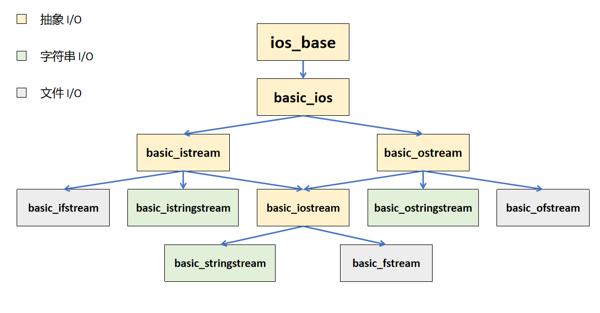

C++ 程序常用 cin ， cout 进行标准
I/O（从键盘读取数据，或输出数据到屏幕），当然也可以进行文件 I/O
（基于文件的数据读写）。这些行为本质上都是进行数据传输——数据向水流一样从一个地方流到另一个地方。C++11
中，将这些操作统一为"流( stream )"。
整个"流式家族"的类继承图长这样：

其中 istream 与 ostream 共同派生了 iostream，为了避免"菱形继承"，其对 ios 的继承采用虚继承。
抽象 I/O
ios_base
作为所有输入/输出流类的基类，维护多个数据如状态信息
iostate
静态变量，指定流状态标志，为 bit mask ，即出现情况时将对应 bit 置位。有以下四种标志：
| 标志 | 含义 |
|---|---|
| goodbit | 0x0 ，表示输入输出无错误 |
| badbit | 0x1 ，表明出现了无法挽回的致命错误 |
| eofbit | 0x2 ，表示操作已到达缓冲区末尾 |
| failbit | 0x4 ，表明出现了可挽回的失败操作，比如格式化错误（如试图读取整数变量却遇到字母） |
当非 goodbit 状态位被打开时，一切读取会被阻塞。
fmtflags
指定流格式控制标志，为 bit mask 。通过
setf() / unsetf()
函数进行开关。常见有以下五种标志：
| 标志 | 含义 |
|---|---|
| boolalpha | 0x1 ，控制
true / false 与真值/非真值的互相解析 |
| dec | 0x2 ，修改输出数据为十进制表示 |
| hex | 0x8 ，修改输出数据为十六进制表示 |
| oct | 0x40 ，修改输出数据为八进制表示 |
| skipws | 0x1000 ，默认为开启状态，使得输入流跳过前导空白字符 |
openmode
指定流打开标志，为 bit mask 。有以下六种标志：
| 标志 | 含义 |
|---|---|
| app | 0x1 ，每次写入前将指针定位到流结尾，即 append |
| ate | 0x2 ，将指针定位到流结尾处，即 at end |
| bin | 0x4 ，以二进制模式打开，即 binary |
| in | 0x8 ，以读模式打开 |
| out | 0x10 ，以写模式打开 |
| trunc | 0x20 ，在打开时清空流的内容，即 truncate |
basic_ios
类模板，直接与缓冲区打交道，并提供若干 api。基于父类 ios_base 的状态标志，其提供了若干状态函数：
| 状态函数 | 含义 |
|---|---|
| good() | 若流的 goodbit 置位，则返回 true |
| eof() | 若流的 eofbit 置位，则返回 true |
| fail() | 若流的 failbit 置位，则返回 true |
| bad() | 若流的 badbit 置位，则返回 true |
| operator ! | 等同于 !fail() |
| operator bool | 等同于 fail() |
| rdstate() | 返回当前状态 |
| setstate() | 设置状态信息 |
| clear() | 清空状态信息 |
istream / ostream / iostream
分别为用于输入与输出的流类，头文件 <iostream>
中定义了四个全局变量对象 cin ， cout ，
cerr ， clog 。
cin
标准输入流对象，主要用于标准输入，即键盘的输入。用户在键盘上敲入字符串后，需按下回车键后，该字符串才会进入所谓
缓冲区 的区域，并且回车会被转为换行符 \n
。以 cin
为例，其读取数据就是从缓冲区获取数据，当缓冲区为空时，它会自我阻塞，直至用户将字符串冲入缓冲区。
其输入函数主要有以下几种：
operator >>
该函数原型有以下两种重载形式：
std::basic_istream& operator>> ( Type& value ); // Type 特化为 int, short, char 等基本类型
std::basic_istream& operator>> ( std:: IOtype& (func*)(IOtype&) ); // IOtype 主要指 istream 及其所有基类
第一种重载模式支持仅基本类型，而第二种重载模式参数为函数指针，常见有
I/O 操纵符，如 std::boolalpha。
可以看到所有返回值类型都为引用，实际上返回值为自身引用
*this，这也很好的支持了连续输入：
cin >> a >> b; // 等价于 (cin.operator>>(a)).operator>>(b);注意，当 cin 用运算符 >> 从缓冲区中读取数据时，会不断忽略并清除缓冲区开始的空白字符（空格、回车、制表符），直至读取成功，读取时也会将字符从缓冲区中取出。剩余部分残留在缓冲区中，不作处理。
#include <iostream>
int main() {
int a;
double b;
std::string c;
std::cin >> a >> b >> c;
std::cout << a << " " << b << " " << c << std::endl;
std::cin >> c;
std::cout << c;
return EXIT_SUCCESS;
}
// input: [回车][回车]1 1.2 foo bar
// output: 1 1.2 foo[回车]bar
// 根据 output 的表现易得，第一个 cin 读至 "foo" 后的空格后暂停，此时缓冲区中剩下{'b', 'a', 'r'}，继续被第二个 cin 读取
get
该函数主要有以下四种重载形式：
// 从缓冲区中读并取出单个字符
int get();
std::basic_istream& get( char& ch );这两种形式均判断给定字符是否可用，若可用，第一种返回字符 ASCII
码值，否则返回 Traits::eof() 并设置 failbit 和
eofbit；第二种将字符赋给 ch，否则，返回 Traits::eof()
并设置 failbit 和 eofbit。
// 从缓冲区中读并取出多个字符，结束符会保留在缓冲区中
std::basic_istream& get( char* s, std::streamsize count );
std::basic_istream& get( char* s, std::streamsize count, char delim );
这两种形式均读取至多 count-1 个字符并将其存储到 s
中（字符串最后为 \0，下同），直至满足任一以下条件：
- 已读取
count-1个字符； - 到达文件末尾，此时调用
setstate(eofbit)； - 下一个字符为结束符，第一种的结束符为
\n，第二种的结束符为用户指定字符delim。此条件下，结束符会保留在缓冲区中；
getline
该函数主要有以下两种重载形式，以及一个同名的全局函数：
// 从缓冲区中读并取出多个字符
std::basic_istream& getline( char* s, std::streamsize count );
std::basic_istream& getline( char* s, std::streamsize count, char delim );这两种形式均读取至多 count-1 个字符并将其存储到 s
中，直至满足任一以下条件：
- 已读取
count-1个字符； - 到达文件末尾，此时调用
setstate(eofbit)； - 下一个字符为结束符。此条件下，结束符会被取出；
// 从缓冲区中读并取出多个字符
std::getline( std::basic_istream& input, std::basic_string& str );
std::getline( std::basic_istream& input, std::basic_string& str, char delim );
std::string其实是std::basic_string的特化，即std::basic_string<char, std::char_traits<char>, std::allocate<char>>。
这两种形式均读取多个字符并将其存储到 s 中，直至满足任一以下条件：
- 到达文件末尾，此时调用
setstate(eofbit)； - 下一个字符为结束符。此条件下，结束符会被一并存入
string中，再转换为\0；
ignore
该函数原型为：
std::basic_istream& ignore( std::streamsize count = 1, int delim = Traits::eof() );其从输入流中提取并舍弃元素，直至满足任一以下条件：
- 已提取
count个字符。在count = std::numeric_limits<std::stream_size>::max()的特殊情况下忽略此条件； - 到达文件末尾，此时调用
setstate(eofbit)； - 遇到结束符。此条件下，ignore 会将结束符舍弃；
根据这一特性，可以利用该函数来清空缓冲区。
cout
标准输出流对象，主要用于标准输出，即将数据输出到屏幕上。
其输出函数主要有以下几种：
operator <<
该函数主要有以下两种重载形式：
std::basic_istream& operator<< ( Type& value ); // Type 特化为 int, short, char 等基本类型
std::basic_istream& operator<< ( std:: IOtype& (func*)(IOtype&) ); // IOtype 主要指 istream 及其所有基类
两种重载模式和 cin.operator>> 大体相同。
put
该函数原型为：
std::basic_ostream& put( char ch );写字符 ch 到输出流。若输出因任何原因失败，则调用
setstate(badbit) 。
cerr
标准错误输出流，用于向屏幕输出出信息。
clog
标准错误输出流，用于向屏幕输出日志信息。
字符串 I/O
istringstream / ostringstream / stringstream
分别实现基于 字符串
的流输入与输出操作，可以直接以字符串为参数构造对象，同时也可以指定打开标志
std::ios_base::openmode 。此外，也可以通过
str() 函数获取对象底层数据结构中的字符串，亦可以通过重载的
str(std::basic_string) 函数修改底层字符串内容。
下面是一个示例：
#include <iostream>
#include <sstream>
int main() {
std::istringstream iss("123 1.23 abc");
int a;
double b;
std::string c;
std::cout << "before: " << iss.str() << std::endl; // 利用 str() 获取流中字符串
iss >> a >> b >> c;
std::cout << a << " " << b << " " << c << std::endl;
iss.str("456 4.56 def"); // 利用 str(string) 修改流中字符串
std::cout << "after: " << iss.str() << std::endl;
iss >> a >> b >> c;
std::cout << a << " " << b << " " << c << std::endl;
std::ostringstream oss1("foo", std::ios_base::ate); // 指定打开模式，指针定位到末尾
std::cout << oss1.str() << std::endl;
std::ostringstream oss2("foo"); // 控制变量
oss2 << "bar";
std::cout << oss2.str();
return EXIT_SUCCESS;
}
最后输出如下：
before: 123 1.23 abc
123 1.23 abcabc
after: 456 4.56 def
123 1.23 abc
foobar
bar这里不难发现，stringstream 提供了一种将字符串转化为其他不同数据类型的新方式。
文件 I/O
ifstream / ofstream / fstream
分别实现基于 文件
的流输入与输出操作，通过文件名构造对象，同时也可以指定打开标志
std::ios_base::openmode 。通过 open() /
close() 来打开/取消关联文件，并可以通过
is_open() 检查流是否有关联文件。
I/O 操纵符
操纵符是令代码能以 operator<< 或
operator>>
控制流输入/输出格式的帮助函数，相当于一个"开关"。其函数原型统一如下：
std::ios_base& std:: CONTROL_TYPE( std::ios_base& str );
这些操纵符的函数名与
ios_base类中的fmtflags标志名几乎一致，但所处命名空间不同：操纵符直接在std下，而fmtflags在std::ios_base下。
传入 operator<< 或 operator>>
后，实际行为如下所示：
// 以 std::cin 为例
operator>> (std::CONTROL_TYPE) {
std::CONTROL_TYPE( *this); // 对 * this 进行一些流控制比特位的设置，效果等同于 cin.setf(std::ios_base::CONTROL_TYPE)
return *this;
}endl
此为仅用于输出的控制符，其函数原型为：
template< class CharT, class Traits >
std::basic_ostream<CharT, Traits>& endl( std::basic_ostream<CharT, Traits>& os );
其作用为将换行符插入输出流。效果等同于
\n，但开销相对而言更高。
boolalpha / noboolalpha
boolalpha 启用流中的布尔控制开关，表现为：
- 输入流中将
true解析为真值，其余均为非真值； - 输出流中将所有真值表达为
true，非真值为false。
而 noboolalpha 则关闭这一开关。示例如下：
#include <sstream>
#include <iostream>
int main() {
// 修改输出
std::cout << std::boolalpha << "boolalpha: " << true << " " << false << std::endl;
std::cout << std::noboolalpha << "noboolalpha: " << true << " " << false << std::endl;
// 解析输入
bool b1, b2;
std::istringstream iss("true false");
iss >> std::boolalpha >> b1 >> b2;
std::cout << iss.str() << ": " << b1 << ' ' << b2;
return EXIT_SUCCESS;
}输出为：
boolalpha: true false
noboolalpha: 1 0
true false: 1 0
skipws / noskipws
skipws
默认为开启状态，使得输入流跳过前导空白字符；而使用 noskipws
后不会跳过。示例：
#include <sstream>
#include <iostream>
int main() {
char c1, c2, c3;
std::istringstream("a b c") >> c1 >> c2 >> c3;
std::cout << "skipws: " << c1 << " " << c2 << " " << c3 << std::endl;
std::istringstream("a b c") >> std::noskipws >> c1 >> c2 >> c3;
std::cout << "noskipws: " << c1 << " " << c2 << " " << c3;
}输出为：
skipws: a b c
noskipws: a b
oct / dec / hex
开启后修改输入输出数的进制表示，分别对应八/十/十六进制。示例：
#include <sstream>
#include <iostream>
int main() {
// 修改输出
std::cout << "octal: " << std::oct << 42 << std::endl;
std::cout << "decimal: " << std::dec << 42 << std::endl;
std::cout << "hex: " << std::hex << 42 << std::endl;
// 解析输入
int n;
std::istringstream("2A") >> std::hex >> n;
std::cout << std::dec << "hex to dec: " << n << std::endl;
std::cout << std::oct << "hex to oct: " << n;
}输出为：
octal: 52
decimal: 42
hex: 2a
hex to dec: 42
hex to oct: 52